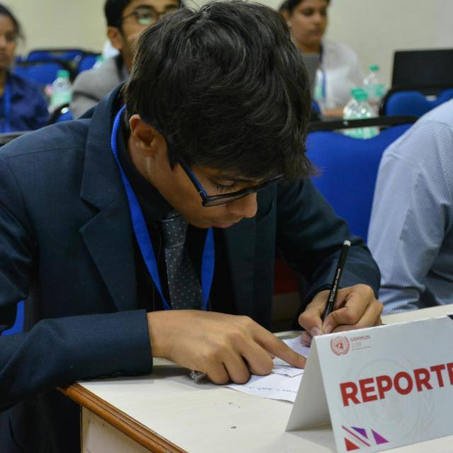

INTERNATIONAL PRESS





"No democracy is complete without access to transparent and reliable information. It is the cornerstone for building fair and impartial institutions, holding leaders accountable and speaking truth to power." — António Guterres, United Nations Secretary-General
The world today is saturated by fake, fragmented, saturated news. The immense power that journalism holds is often wielded by the wrong people. As a member of The International Press, the power to inform, the responsibility to speak truth to power now lies on your shoulders.